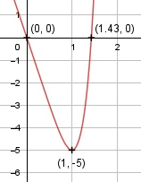

Aufgabe 66 f(x) = x6 - 6x f'(x) = 6x5 - 6, f''(x) = 30x4, f'''(x) = 120x3 Definitionsbereich: -∞ < x < ∞ Wertebereich: -5 ≤ f(x) < ∞ (siehe Extrempunkte) Asymptoten: - Symmetrie zur y-Achse bzw. zum Punkt (0|0): f(-x) = (-x)6 – 6(-x) f(-x) = x6 + 6x ≠ f(x) --> keine Achsensymmetrie -f(-x) = -(x6 + 6x) -f(-x) = -x6 - 6x ≠ f(x) --> keine Punktsymmetrie Nullstellen: f(x) = 0 x6 - 6x = 0 x * (x5 - 6) = 0 x1 = 0 x5 - 6 = 0 |+6 x5 = 6 | x2 = 1,43 N1(0|0), N2(1,43|0) Schnittpunkt mit der y-Achse: x = 0 f(0) = 06 - 6 * 0 = 0 Sy(0|0) Extrempunkte: f'(x) = 0 6x5 - 6 = 0 |+6 6x5 = 6 |:6 x5 = 1| x1 = 1 f(1) = 16 - 6 * 1 = -5 f''(1) = 30 * 14 > 0 --> Tiefpunkt (1|-5) Wendepunkte: f''(x) = 0 30x4 = 0 |:30 x4 = 0 | x = 0 f'''(0) = 120 * 03 = 0 f''''(0) = 360 * 02 = 0 f'''''(0) = 720 * 0 = 0 f''''''(0) = 720 ≠ 0 --> Grad der Ableitung gerade --> kein Wendepunkt Graph:
